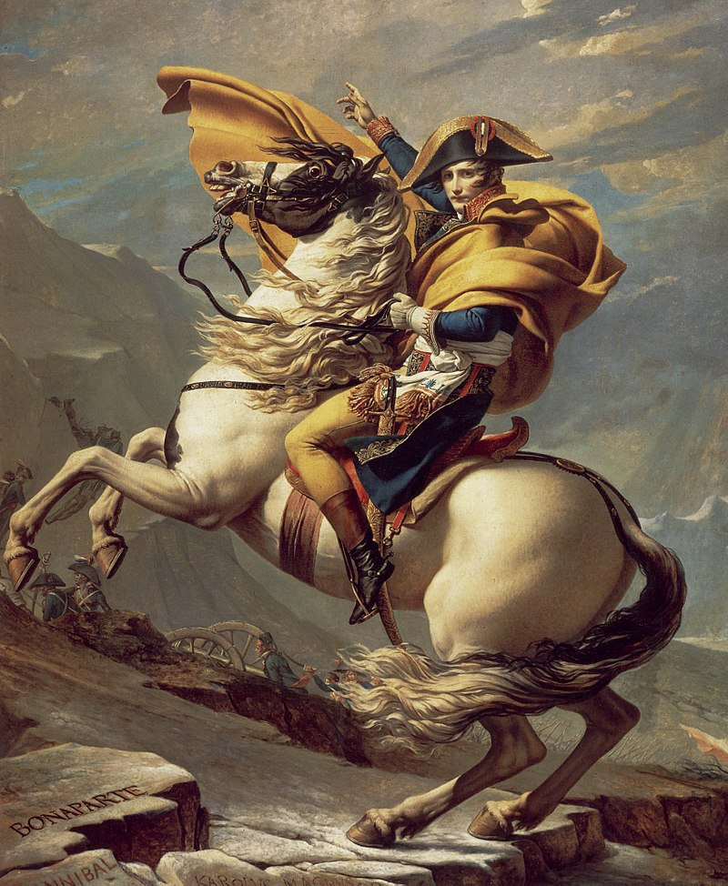

Napoleone
Ufficiale d'artiglieria e quindi generale durante la rivoluzione francese, divenne famoso come principale generale della Francia rivoluzionaria grazie alle vittorie ottenute nel corso della prima campagna d'Italia. Dopo il colpo di Stato del 18 brumaio (9 novembre 1799) assunse il potere in Francia: fu Primo Console dal novembre di quell'anno al 18 maggio 1804, e Imperatore dei francesi, con il nome di Napoleone I (Napoléon Ier) dal 2 dicembre 1804 al 14 aprile 1814 e nuovamente dal 20 marzo al 22 giugno 1815. Fu anche presidente della Repubblica Italiana dal 1802 al 1805, re d'Italia dal 1805 al 1814, «mediatore» della Confederazione svizzera dal 1803 al 1813 e «protettore» della Confederazione del Reno dal 1806 al 1813. Grande uomo di guerra, protagonista di oltre venti anni di campagne in Europa, Napoleone è stato considerato il più grande stratega della storia dallo storico militare Basil Liddell Hart,[2] mentre lo storico Evgenij Tàrle non esita a definirlo "l'incomparabile maestro dell'arte della guerra" e "il più grande dei grandi".[3] Grazie al suo sistema di alleanze e a una serie di brillanti vittorie contro le potenze europee, conquistò e governò larga parte dell'Europa continentale, esportando gli ideali rivoluzionari di rinnovamento sociale e arrivando a controllare numerosi Regni tramite persone a lui fedeli (Giuseppe Bonaparte in Spagna, Gioacchino Murat nel Regno di Napoli, Girolamo Bonaparte in Vestfalia, Jean-Baptiste Jules Bernadotte nel Regno di Svezia e Luigi Bonaparte nel Regno d'Olanda).
La sua riforma del sistema giuridico (confluita nel Codice Napoleonico), introdusse chiarezza e semplicità delle norme e pose le basi per la moderna giurisdizione civile. La disastrosa campagna di Russia (1812), segnò il tramonto del suo dominio sull'Europa. Sconfitto nella battaglia di Lipsia dagli alleati europei nell'ottobre del 1813, Napoleone abdicò il 4 aprile 1814, e fu esiliato nell'isola d'Elba. Nel marzo del 1815, abbandonata furtivamente l'isola, sbarcò a Golfe Juan, vicino ad Antibes e rientrò a Parigi senza incontrare opposizione, riconquistando il potere per il periodo detto dei "cento giorni", finché non venne definitivamente sconfitto dalla settima coalizione nella battaglia di Waterloo, il 18 giugno 1815. Trascorse gli ultimi anni di vita in esilio all'isola di Sant'Elena, sotto il controllo dei britannici. Dopo la sua caduta il congresso di Vienna ristabilì in Europa i vecchi regni pre-napoleonici (Restaurazione). Fu il primo regnante della dinastia dei Bonaparte. Sposò Giuseppina di Beauharnais nel 1796, e in seconde nozze l'arciduchessa Maria Luisa d'Austria, l'11 marzo 1810, dalla quale ebbe l'unico figlio legittimo, Napoleone Francesco, detto il re di Roma (1811-1832). La sua figura ha ispirato artisti, letterati, musicisti, politici, filosofi e storici, dall'Ottocento ai giorni nostri.Giova